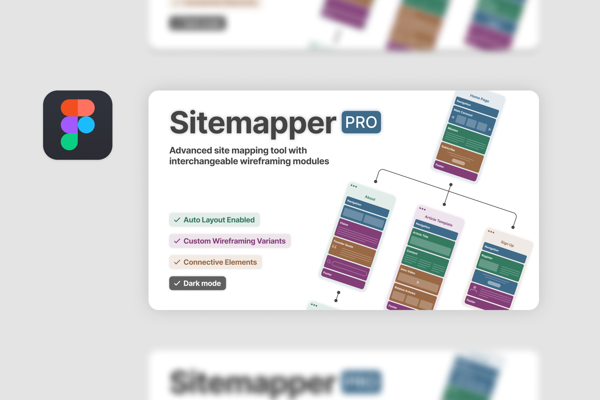
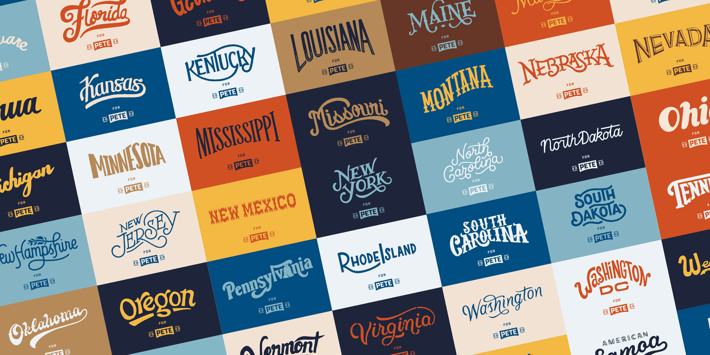
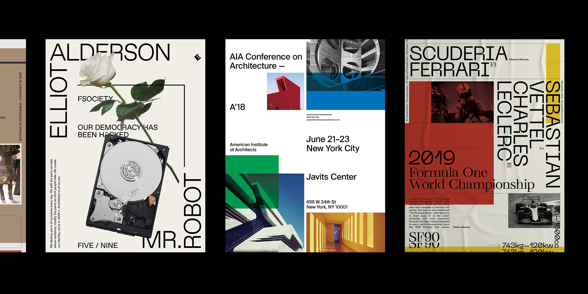

Etcetera
An archive of updates including projects I'm building, freelance work, or things that inspire me.

Sitemapper Pro
An advanced site mapping tool published on the Figma Community
Read More →
Pete for America Lettering
State placards created for Pete Buttigieg's 2020 presidential campaign
Read More →
Experimental Typography
A collection of typographic poster art
Read More →